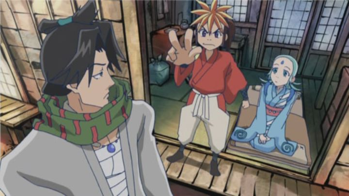

Apparently, "Oh! Edo Rocket" is loosely based off of a modern Japanese play. I know that because the show's characters told me. "Oh Edo! Rocket" continuously breaks the third wall, and is arguably a great little comedy show. But it feels overcrowded really quickly, and will overstay its welcome for most.In the sleepy little town of Edo, in the slummy district, Seikechi lives to build fireworks. If for nothing else, he loves to see people's eyes light up and their hopes rise whenever seeing his beautiful work. This catches the eye of Sora, a beautiful young woman who hires him to build her a rocket to the moon. After a few episodes, he quickly learns this is meant for travel, and that Sora is actually the moon goddess, trying to return home. While Seikechi works on the rocket and gets his friends and neighbours to pitch in (all the while avoiding getting the local government's attention, having illegalized fun throughout), we learn that Sora is actually an alien, whose true form looks more like a hairless werewolf. She's not the only alien who got stuck on Earth, and she tries to hunt down another who has been devouring humans. The biggest issue is the amount of story. There's just too much of it. Too many characters, too many interweaving plots. It's not that it's chaotic, just that it becomes dull, splitting your attention so many ways that you ultimately don't keep much attention for anything. Which is a shame given how funny it is, be it from dialogue choices to visual gags, to constant inconsistencies with the time period and wall-breaking references to it being an anime show. I haven't seen a show so similar to "FLCL" before, which is the highest praise I can give it. But this is 26 episodes. "FLCL" was only 6, and we wanted more. With "Oh! Edo Rocket," I wanted less. It seems about 12 episodes would have been the sweet spot. It doesn't help that the ending reveals the show to be unnecessary to begin with (while humorous, it also confirms that you just wasted your time).  The art is... odd. The backgrounds are beautiful, each looking like hand-painted ink and watercolor paintings from the era. The character designs range from big eyed, to standard, to goofy "Shin-Chan"-style caricatures. I don't remember seeing any other anime from animation studio Madhouse that looked like this, and I suspect their best artists were not working on this show at the time. The music is bobby and fun. The English dub is fine, although its clear the translators had the most (or least) fun making everything work in a way for English audiences to follow. Gag-anime can vary greatly in quality, and the most important part is to ensure it makes you laugh. If you want a humorous show, "Oh! Edo Rocket" will likely make you chuckle more than most other shows. However, if they had a complication film, I would probably recommend that instead.
- "Ani" More reviews can be found at : https://2danicritic.github.io/ Previous review: review_Ocean_Waves Next review: review_One_Piece_Film_-_Gold